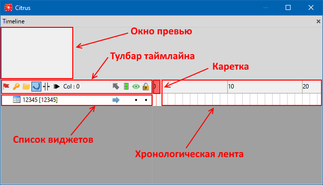
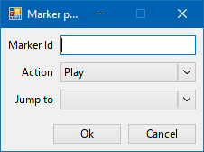

Окно «Timeline»
[EN | RU]
Окно таймлайна служит для отображения кадров и маркеров в хронологическом порядке.
Оно состоит из ленты превью, панели инструментов, списка виджетов и хронологической ленты.
На превью можно видеть весь таймлайн целиком и передвигать рабочую область, драгая и перемещая её влево или вправо. Также, на Alt + Mousewheel есть возможность выставить зум так, как удобно.
Панель инструментов состоит из нескольких элементов:

 Animation mode - режим анимации, при котором редактор будет заходить во все вложенные анимации
Animation mode - режим анимации, при котором редактор будет заходить во все вложенные анимации Automatic keyframes - режим автоматического расставления ключей анимации
Automatic keyframes - режим автоматического расставления ключей анимации Create folder - создать папку
Create folder - создать папку Edit curves - режим отображения кривых (WIP)
Edit curves - режим отображения кривых (WIP) Animation stretch mode - режим "растягивания" анимации, при котором можно увеличить или уменьшить проигрываемую анимацию по времени, просто потянув за ее края временного промежутка
Animation stretch mode - режим "растягивания" анимации, при котором можно увеличить или уменьшить проигрываемую анимацию по времени, просто потянув за ее края временного промежутка Slow motion mode
Slow motion mode ~- режим замедления времени, замедляется на x0.10 раз- Col: N - индикатор текущего столбца
 Exit current container
Exit current container Backspace- выходит из текущего контейнера Lock animation - включает/выключает анимирование нода, причем для всех анимаций. Зеленый цвет – все аниматоры enabled, серый – все disabled, синий – часть так, часть так (синий появляется когда например мы создаем новый аниматор (он станет enabled), а существующие – disabled).
Lock animation - включает/выключает анимирование нода, причем для всех анимаций. Зеленый цвет – все аниматоры enabled, серый – все disabled, синий – часть так, часть так (синий появляется когда например мы создаем новый аниматор (он станет enabled), а существующие – disabled). Show Node - отображение виджетов на Viewport (Shown/Hidden), при клике через
Show Node - отображение виджетов на Viewport (Shown/Hidden), при клике через Shiftизменяет параметр только для выбранных виджетов Lock Node - блокирует виджет, не давая вносить в него какие-либо изменения
Lock Node - блокирует виджет, не давая вносить в него какие-либо изменения
Список виджетов используется для навигации по всем виджетам, используемым в сцене
По ПКМ с виджетами доступны действия:
- Copy/Cut/Paste/Delete - копировать/вырезать/вставить/удалить виджеты
- Rename - переименовать виджет
- Color mark - выставляет "цвет" виджету, используется только для цветовой дифференциации внутри редактора
- Convert to Button - конвертирует виджет в кнопку (работает только для объектов типа Frame)
Также по Shift + Space на виджете (или кликнув на значок выпадающего списка слева) можно раскрыть список аниматоров, используемых в виджете.
Для аниматоров доступны операции Copy/Cut/Paste/Delete

Хронологическая лента отображает анимации покадрово, также она используется для того, чтобы производить действия с кейфреймами и анимациями:
- Cut Keyframes
Ctrl + Alt + X- вырезать выделенные кейфреймы (со всеми ключами анимации) - Copy Keyframes
Ctrl + Alt + C- копировать выделенные кейфреймы - Paste Keyframes
Ctrl + Alt + V- вставить выделенные/скопированные кейфреймы в выбранный кадр. Если у виджета отсутствует какое-то анимированное свойство, оно будет игнорироваться. - Reverse Keyframes - "переворачивает" анимацию на выбранном временном отрезке. Т.е. если виджет двигался из A -> B, то станет двигаться из B -> A и так далее.
- Insert Timeline Column
Ctrl + Q- вставить колонку на таймлайне - Remove Timeline Column
Ctrl + W- удалить колонку на таймлайне. При этом, если колонка содержала ключи анимации, они будут смещены влево - Delete Selected Keyframes
Ctrl + Del- удалить выделенные кейфреймы - Numeric Move - смещение выбранного участка таймлайна на N кадров вправо. При вводе отрицательного значения - влево
- Numeric Scale - масштабирование выбранного участка таймлайна, используя множитель
Даблкликом на таймлайне создаются маркеры. Также их можно создать, используя горячие клавиши (Alt + 1/2/3)
Окно создания маркера выглядит так:

- Marker Id - идентификатор (имя) маркера
- Action - действие, которые будет выполняться, когда каретка достигнет маркера (Play/Jump/Stop)
- Jump to - маркер, на который будет "прыгать" каретка при достижении маркера, если выбран маркер типа "Jump"